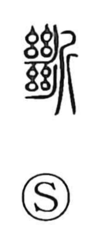

断

Kun: tatsu, kotowaru | On: dan
to cut off ・ to sever ・ to refuse ・ to decide ・ to abandon
Explanation
Originally written 斷, the character combines the 系 element—depicting a thread broken in two and set in a loom—with 斤, the axe used to cut it. It first meant the cutting of a thread, and by extension came to express cutting off or severing in general; from this core image it further developed senses such as discarding or abandoning, declining or refusing, and, by making a decisive “cut,” laying down a decision.